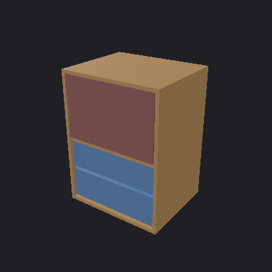
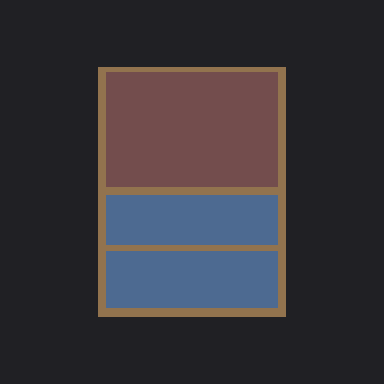
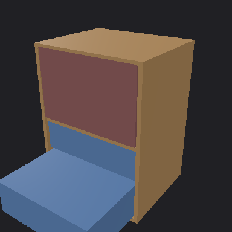
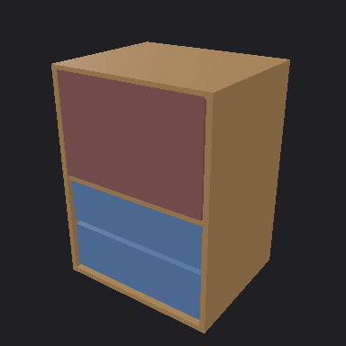
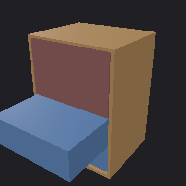
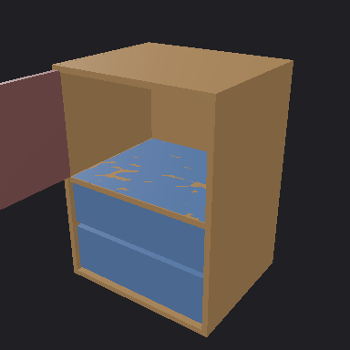

Verification: fail
Runtime budget violations found.
Termination: budget_exhausted · Observations spent: 12 / 12
Full result · Observation trace ·
Repair feedback Privileged gold audit
Findings
- runtime.triangle_budget: triangles_scene=6228 exceeds limit 5000.
Fix: Reduce subdivisions or consolidate draw calls, then recheck. · Evidence: (0,)
Limitations
- Offline runtime baseline does not judge visual, kinematic or physical correctness.
Reference inputs

Reference inputAcquired views

Step 1: RequestView Step 2: RequestView
Step 2: RequestView
Step 3: ActuateJoint
Step 5: ActuateJoint
Step 6: ActuateJoint Step 8: ActuateJoint
Step 8: ActuateJoint
Step 9: ActuateJoint Step 11: ActuateJoint
Step 11: ActuateJointModel calls